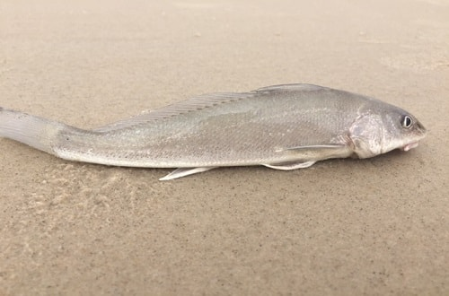

.png)
Praia Mole
Introdução
A praia mole é uma praia muito conhecida em Florianópolis, isto por sua beleza inigualável e sua grande variedade de fauna e flora. A praia mole está localizada no setor leste de Florianópolis, próximo a lagoa da conceição, a aproximadamente 15km do centro de Florianópolis. A praia mole se destaca principalmente pelas atividades realizadas nela, sendo a principal o surf, isso devido a sua constante leva de ondas e tubulares que atraem todos os amantes do surf. Deixando claro que esta praia já foi o palco de várias competições de surf, como por exemplo o Layback Pro, competição na qual teve sua estreia em 2021. Além de sua bela paisagem, estrutura maravilhosa e ótimo local de surf, a praia Mole se destaca por ser um local de preservação ambiental, do Parque municipal da Galheta, afetando diretamente na qualidade de sua água, fauna e flora, demonstrando assim que a praia mole é um local lindo de boa preservação e uma boa balneabilidade para os banhistas e turistas que prezam por uma boa água para aproveitar a praia.
Especies
Pampo-amarelo
https://portalvidalivre.com/articles/124
Trachinotus carolinus (conhecido também como Pampo verdadeiro e Pampo-Amarelo), este peixe é um tipo de peixe comumente encontrado em águas costeiras rasas, praias arenosas, costões e estuários de água salobra. Tem como principal hábito nadar de maneira livre as vezes sozinho, porém também em pequenos cardumes;
Pampo-galhudo

http://www.pescacommosca.com.br/pampog.htm
Trachinotus goodei (conhecido também como Pampo-galhudo, pâmpano e pampo-riscado), peixe comumente encontrado em águas costeiras rasas, canais ou buracos, recifes, praias arenosas ou fundos lamacentos. Tem como principal hábito nadar de maneira livre as vezes sozinho, porém também em pequenos cardumes;
Papa-terra
https://www.borapescar.com/blogs/betara/
Menticirrhus americanos (conhecido também como Papa-Terra ou Betara), peixe comumente encontrado em canais formados nas costas marítimas, geralmente em locais mais fundos, por isso se encaixam como peixes demersais, porém possuem temporadas em que o Papa-Terra se encontra mais perto da beira do mar, geralmente acontecendo isto no verão. Carne muito saboroso de acordo com os amantes de peixes, tem como principal hábito ser um predador, se alimentando de vários tipos de alimentos como pequenos crustáceos, moluscos, camarões, pequenos peixes, entre outros;
Robalo

https://www.ruraltectv.com.br/como-criar-robalo/
Centrpomus parallelus (conhecido também como robalo), peixe comumente encontrado em costas, porém para conseguir se alimentar o famoso robalo ocupa estuários e rios. Tem como principal hábito ser um peixe solitário além de ser um predador, que se alimenta principalmente de alimentos como crustáceos, moluscos, camarões e pequenos peixes;
Sargo-amarelo
https://www.flickr.com/photos/62404503@N00/990737729
Anisotremus moricandi (conhecido também como Sargo-amarelo), peixe comumente encontrado em recifes rochosos com baixo crescimento de corais. Tem como principal hábito andar em pequenos grupos ou sozinho;
Baiacu

https://olhardigital.com.br/2024/02/12/ciencia-e-espaco/baiacu-e-perigoso-entenda-por-que-peixe-e-venenoso/
Tetraodontidae (conhecido também como baiacu), peixe comumente encontrado em formações coralinas. Tem como principal característica conseguir inflar o seu corpo, fazendo isto engolindo água ou ar além de possuir o hábito de buscar alimentos no período noturno em áreas de vegetações marinhas.
Tainha

https://engeplus.com.br/noticia/economia/2016/epagri-pesquisa-criacao-de-tainhas-em-agua-doce
Mugilidae (conhecido também como tainha), peixe comumente encontrado em águas costeiras e estua-rinas, geralmente em locais rasos em cardumes perto das superfícies. Tem como principal característica ser um grande ativo comercial de várias regiões, como por exemplo Florianópolis, além de ter como ter comportamento migratório sempre se movendo para águas mais quentes durante o período do inverno e retornando ao seu local de reprodução no verão, configurando assim a famosa safra da tainha;
Bagre

https://cetesb.sp.gov.br/blog/2016/01/27/incidencia-de-ferimentos-causados-por-ferrao-de-bagre-preocupa-turistas/
Siluriformes (conhecido também como bagre), peixe comumente encontrado em costeiras tropicais e subtropicais em águas de pouca profundidade, possuindo o fundo arenoso ou lodoso. Tem como principais características ser um peixe de uma certa facilidade de ser pescado, ou seja, é um peixe característico da pesca esportiva, além de ser um peixe que consegue viver tanto em águas limpas tanto em águas com lama. Por fim sobre a alimentação do bagre, ele como desde caranguejos, pequenos peixes ou até mesmo plantas;
Barbudinho

https://www.borapescar.com/blogs/parati-barbudo-ou-nariz-de-vidro/
Polydactylus oligodon (conhecido também como barbudinho, nariz de vidro, parati gato e piracueba), peixe comumente encontrados águas rasas, costões e recifes. Tem como principais características formar muitas vezes grupos e de vez em quando é encontrado em cardumes, outra característica é possuir hábito alimentar noturno e realizar a reprodução nos meses mais frios.
Xaréu Olhudo
https://www.oceaninspiration.net/xareu/
Caranx Latus (conhecido também como xaréu olhudo), peixe comumente encontrado em locais próximos de recifes de corais, águas costeiras e águas salobras. Tem como principais características viver em pequenos cardumes, além de ser um grande predador, que consome principalmente pequenos peixes, camarões e outros animais invertebrados;
Balneabilidade
Como já citado anteriormente a mole é uma praia muito visada por sua boa balneabilidade, ou seja, consequentemente seu mar é um dos principais fator pela sua grande quantidade de visitantes diariamente em períodos como no verão. Dando segmento na questão da balneabilidade, para fins informativos serão especificados os últimos dados sobre a balneabilidade da praia mole. De acordo com dados de 21/02/2024, a praia mole é dividida em um grande trecho no qual sua concentração de escherichia coli (bactéria na qual causa infecções como a urinária, intestinais e bexiga podendo causar doenças piores como a meningite em bebês. ) é de 10 NMP a cada 100ml, resultando assim em uma qualidade marinha adequada para se banhar.